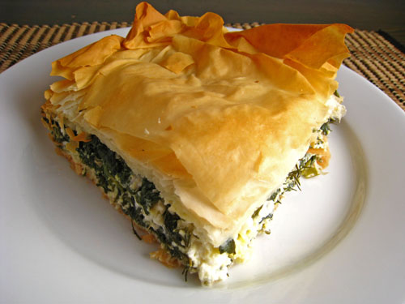

Spinach Pie Recipe

Spanikopita (Greek Spinach Pie)
Ingredients
- 2 tablespoons butter
- (16 ounce) package frozen chopped spinach, thawed and drained
- 3 eggs
- 1 ½ cups heavy cream
- ½ cup shredded Swiss cheese
- spices
Steps
- Preheat oven to 375 degrees F (190 degrees C). Spray a 9 inch pie pan with non-stick cooking spray.
- Melt 2 tablespoons butter in a large saucepan over medium-high heat. Add onions and cook, stirring occasionally, until onions are soft. Squeeze extra water out of the spinach and add the spinach to the skillet. Continue cooking until the spinach is heated through and the extra water evaporates. Spoon mixture into pie pan.
- Melt 2 tablespoons butter in a large saucepan over medium-high heat. Add onions and cook, stirring occasionally, until onions are soft. Squeeze extra water out of the spinach and add the spinach to the skillet. Continue cooking until the spinach is heated through and the extra water evaporates. Spoon mixture into pie pan.
- Bake 25 to 30 minutes until set and golden brown. Cool 5 minutes before serving.